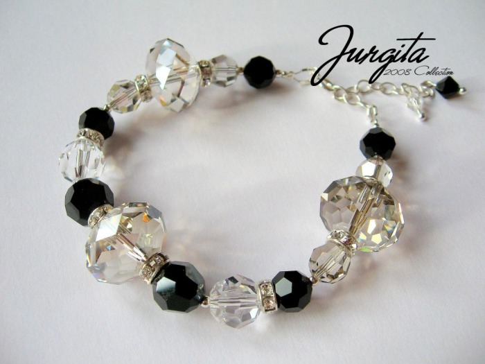

Apyrankės | Factory By Ribas
 Dėl svetainės atnaujinimo darbų, laikinai negalime atvaizduoti visų turimų prekių. Maloniai kviečiame apsilankyti mūsų Stiklių g. 9 parduotuvėje ir rasti savo papuošalą su deimantais! Nauja "Marry Me by Ribas" kolekcija Plačiau +370 683 331 31 Nemokamas pristatymas ir grąžinimas Papuošalų pristatymas ir grąžinimas visoje Lietuvoje - nemokamas. Pristatymas į užsienį nemokamas - perkant už 200 Eur ir daugiau. 5 metų garantija ir nemokama priežiūra Visiems "The Factory by Ribas" rankų darbo papuošalams su deimantais taikoma 5 metų garantija. Užsukę į mūsų Stiklių g. parduotuvę visuomet galėsite nemokamai ir vos per kelias minutes atsinaujinti savo papuošalo spindesį su nemokama papuošalų valymo paslauga. en lt Parduotuvė Žiedai Apyrankės Auskarai Pakabukai Vaikams Vyrams Marry Me Messika Deimantai Apie Kontaktai 0 Prisijungti RegistruotisApyrankės
Deimantai Žiedai Apyrankės Pakabukai Vaikams Marry Me Auskarai Vyrams Messika Pagrindinis Parduotuvė ApyrankėsApyrankės
Kaina, €
Aukso spalva
Baltas 27 Geltonas 16 Rožinis 4 Rodyti daugiauBrangakmenis
Deimantas 45 Juodas deimantas 2 Rodyti daugiau Rezultatai Filtrai IšvalytiShowing 1–15 of 55 results
1 2 3 4Geltono aukso apyrankė su deimantais
€ 1,650.00
peržiūrėtiMESSIKA balto aukso apyrankė su deimantais Baby Move Pavé
€ 2,350.00
peržiūrėtiMESSIKA balto aukso apyrankė su deimantais Joy Diamant Rond
€ 2,370.00
peržiūrėtiMESSIKA balto aukso apyrankė su deimantais Joy Diamant Poire
€ 2,600.00
peržiūrėtiMESSIKA balto aukso apyrankė su deimantais Joy
€ 1,050.00
peržiūrėtiRaudona juostelė-apyrankė su deimantu (baltas auksas)
€ 119.00
peržiūrėtiRaudona juostelė-apyrankė su deimantu (baltas auksas)
€ 69.00
peržiūrėtiGeltono aukso apyrankė su juodais deimantais „Tennis Bracelet“
€ 4,300.00
peržiūrėtiBalto aukso apyrankė su deimantais „Tennis Bracelet“
€ 6,800.00
peržiūrėtiGeltono aukso apyrankė su deimantais
€ 816.00
peržiūrėtiBalto aukso apyrankė su deimantais
€ 340.00
peržiūrėtiGeltono aukso apyrankė su deimantais
€ 568.00
peržiūrėtiRaudona juostelė-apyrankė su deimantu by Robert Kalinkin (baltas auksas)
€ 145.00
peržiūrėtiRaudona juostelė-apyrankė su deimantu by Robert Kalinkin (geltonas auksas)
€ 145.00
peržiūrėtiGeltona juostelė-apyrankė su deimantu ir geltono aukso užsegimu
€ 145.00
peržiūrėtiShowing 1–15 of 55 results
1 2 3 4Naujienlaiškis
Parduotuvė Auskarai Žiedai Apyrankės Pakabukai Vaikams Vyrams Marry Me Informacija Slapukų naudojimo politika Kaip išsirinkti? Parduotuvės taisyklės Apie Apie parduotuvę Marry me Kontaktai Stiklių g. 9/Gaono g. 10, LT-01131 +370 683 331 31 shop@thefactorybyribas.com I - V: 10:00 - 19:30 VI: 11:00 - 18:00 VII: 11:00 - 16:00Rekvizitai.lt rekomenduoja - TOP įmonė 2019
Creditinfo - Stipriausi Lietuvoje 2019
2020 The Factory made visible by [wcas-search-form] Parduotuvė Žiedai Apyrankės Auskarai Pakabukai Vaikams Vyrams Marry Me Messika Deimantai Apie Kontaktai Nemokamas pristatymas ir grąžinimas Papuošalų pristatymas ir grąžinimas visoje Lietuvoje - nemokamas. Pristatymas į užsienį nemokamas - perkant už 200 Eur ir daugiau. 5 metų garantija ir nemokama priežiūra Visiems "The Factory by Ribas" rankų darbo papuošalams su deimantais taikoma 5 metų garantija. Užsukę į mūsų Stiklių g. parduotuvę visuomet galėsite nemokamai ir vos per kelias minutes atsinaujinti savo papuošalo spindesį su nemokama papuošalų valymo paslauga. +370 683 331 31 en lt 55 Informuojame, kad šioje svetainėje naudojami slapukai (angl. cookies). Sutikdami, paspauskite mygtuką „Sutinku“. Sutinku Plačiau Privacy & Cookies Policy ClosePrivacy Overview
This website uses cookies to improve your experience while you navigate through the website. Out of these, the cookies that are categorized as necessary are stored on your browser as they are essential for the working of basic functionalities of the website. We also use third-party cookies that help us analyze and understand how you use this website. These cookies will be stored in your browser only with your consent. You also have the option to opt-out of these cookies. But opting out of some of these cookies may affect your browsing experience. Necessary Necessary Always EnabledNecessary cookies are absolutely essential for the website to function properly. This category only includes cookies that ensures basic functionalities and security features of the website. These cookies do not store any personal information.
Non-necessary Non-necessaryAny cookies that may not be particularly necessary for the website to function and is used specifically to collect user personal data via analytics, ads, other embedded contents are termed as non-necessary cookies. It is mandatory to procure user consent prior to running these cookies on your website.